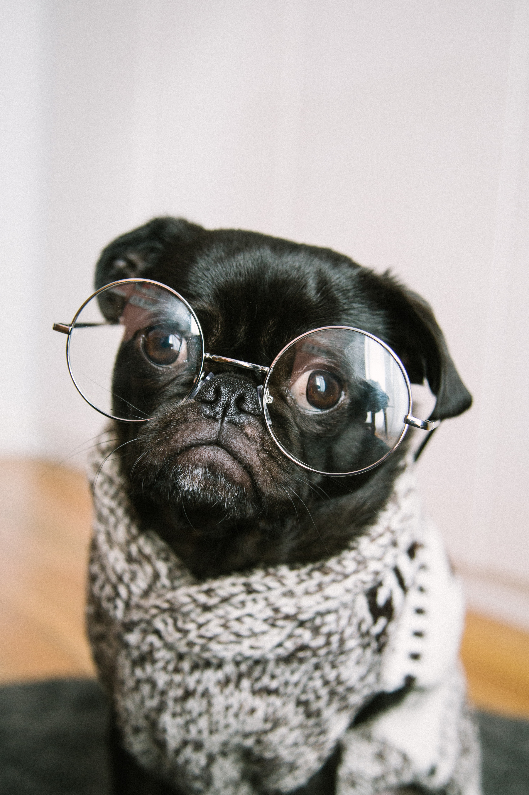

But who wants to read if you can watch cute modeling dogs?
Prince of Barkness
The Prince loves the nerdy style. Mostly he just wears a simple crew or V-neck sweater which he usually styles to look casual with jeans, or dressed up with a skirt. He is up to everything: From oversize Gucci glasses to high-water Prada suits. We can be sure that this season the nineties nerd stages a major comeback on the doggy runways.

Sherlock Bones
Sherlock's French style is less about appearing perfect and more about appearing effortless. He is a little more chic, very classic. His inspiration goes from Brigitte Bardot in a Breton-striped top over an old Frenchman playing a sun-soaked game of petanque in a beret to the impossibly slim Parisian woman dressed head-to-toe in black.
The Notorious D.O.G.
Snoop Dogg's best friend has a weakness for the iconic "gangsta" style and mostly combines baggy jeans and an oversized, extremely clean white T-shirt. He actually buys some fresh white T-shirts instead of washing the used ones. They are also several sizes above what would be considered a normal T-shirt fit. Sometimes we see him wearing tank-top style undershirts without any pants but humming his latest self made autotune track.